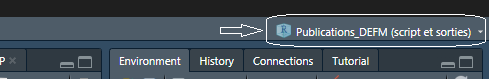
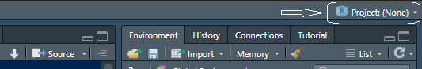
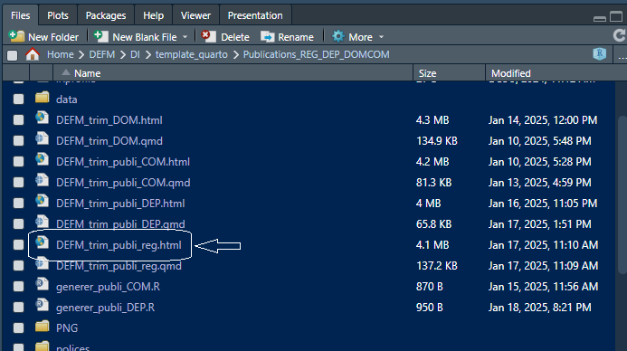
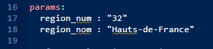
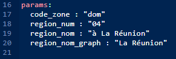
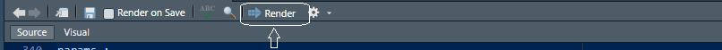
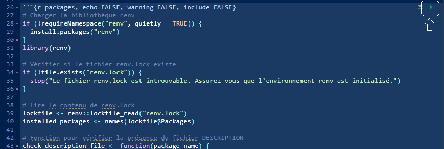
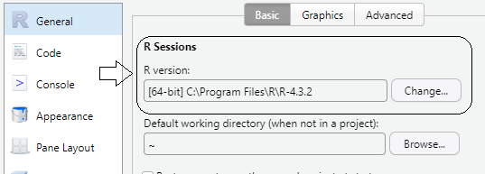
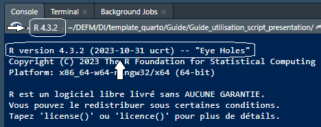
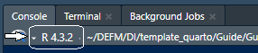

Publications DEFM en région
Un guide d’utilisation du script permettant de produire les publications DEFM trimestrielles régionales et départementales
1 Contexte
La loi pour le plein emploi du 18 décembre 2023 prévoit, au plus tard en 2025, une inscription automatisée de l’ensemble des personnes sans emploi auprès de France Travail.
Demandeurs d’emploi aujourd’hui inscrits auprès de France Travail ;
Allocataires du RSA (revenu de solidarité active) ;
Jeunes accompagnés par les Missions locales ;
Personnes handicapées accompagnées par Cap emploi.
Cette évolution majeure a des incidences statistiques notables avec notamment la création de deux nouvelles séries, les catégories F (parcours social) et G (catégorie d’attente).
Les évolutions statistiques liées à la mise en place de la loi plein emploi ont alimenté les travaux d’un groupe de travail qui a réfléchi sur les évolutions de la publication trimestrielle sur les demandeurs d’emploi en fin de mois.
L’outil utilisé pour générer la publication trimestrielle sur les demandeurs d’emploi en fin de mois évolue également, et le présent document décrit les étapes de traitements et précise les prérequis pour la production d’une maquette territoriale rénovée.
La Mission de l’action régionale (Mareg) de la Dares a créé un document Quarto et élaboré trois scripts R afin de répondre aux besoins éditoriaux en région : - Un script pour les régions métropolitaines, - Un script pour les départements métropolitains, - Un script pour les départements d’outre-mer.
La Mareg s’engage à fournir des versions stables des scripts et à accompagner les Sese dans leur utilisation. Cependant, elle ne pourra pas garantir d’assistance en cas de modifications apportées au code localement, qu’il s’agisse de sa forme, de sa structure ou de son contenu.
2 Les outils : R, RStudio et Quarto

R est le langage de programmation utilisé pour coder les analyses statistiques et la visualisation des données. Les scripts seront exécutés dans l’environnement RStudio qui est environnement de développement intégré pour R.
Quarto est un outil de publication qui permet l’édition de rapports, présentations, sites web ou articles scientifiques, sous divers format (HTML, PDF, Word, etc.).
Ce Framework peut être considéré comme une évolution de R Markdown dont il reprend des éléments tout en offrant une plus grande modularité et des fonctionnalités avancées pour l’édition de rapports. Aussi, il présente l’avantage de ne pas dépendre exclusivement de l’environnement R et est exploitable par d’autres langages de programmation (Annexe 1).
| Outils | Utilisation | Relation avec les autres outils |
|---|---|---|
| R | Langage et moteur de programmation | Utilisé par R Studio et Quarto pour exécuter le code |
| R Studio |
Interface graphique - Environnement de développement intégré |
Intègre R pour l’analyse de données et la lecture du Quarto |
| Quarto | Générateur de document (HTML, PDF, PPT…) | Utilise R (ou d’autres langages) pour lire du code et mettre en page des rapports |
Un document Quarto est créé à partir de fichiers au format .qmd (Quarto Markdown). Ces fichiers contiennent du code, des textes, et des métadonnées spécifiquement conçus pour produire des documents finalisés.
3 Etapes préalables
3.1 Pré-requis logiciel
- R 4.3.2 en 64 bits
- RStudio 2024.09.0+375 dénommé également “Cranberry Hibiscus”, ou version ultérieure disponible dans le centre logiciel
- Fichiers de données au format SAS disponibles sur le serveur de partage Nostra
A noter : Depuis l’interface RStudio, dans le menu Tools > Global Options >R General vous pourrez contrôler la version de R à partir de laquelle vous travaillez. C’est une chose qu’il faut garder en tête car cette manipulation devra être faite à chaque évolution de R.
3.1.1 Organisation du poste de travail
Pour encadrer au mieux les traitements sur les postes de travail des agents, tous les éléments de production ont été centralisés dans un unique projet RStudio (Annexe 2). En racine de ce projet, on trouve les fichiers, scripts et dossiers suivants :
| Type de fichier | Contenu |
|---|---|
|
Fichier RProj |
Publications_DEFM (sorties et scripts).RProj : encapsule l’ensemble du projet R et garanti l’utilisation de chemins relatifs |
|
Scripts R |
DEFM_trim_publi_reg.qmd : script régions métropolitaines DEFM_trim_DOM.qmd : script DOM DEFM_trim_publi_DEP.qmd : script des départements en métropole generer_publi_DEP.R : génère les rapports automatisés dans les départements |
|
Dossiers |
data : données sources au format SAS (régions, départements, france) PNG : c’est ici que l’on trouve l’entête <entete_maregion.png> polices : polices d’écriture utilisées pour la publication publication_dep : après avoir été générés, les fichiers HTML pour les publications départementales sont stockés ici renv : dossier relatif au package sorties : ensemble des tableaux produits pour la publication |
|
Autres documents |
Le présent guide d’utilisation (docx et hmtl) La feuille de style (.css) appelée dans chacun des script R Les fichiers (.html) générés lors de la compilation des fichiers (.qmd) |
3.1.2 Focus sur le dossier data
Avant les traitements, les fichiers de données Nostra au format SAS devront être distribués dans le dossier data.
Ce sont principalement les tables trimestrielles au format SAS qui sont utilisées dans la maquette. Les tables brutes sont utilisées pour pouvoir mobiliser les informations des séries F et G.
- regions :
- numero_region : données stockées dans un sous dossier désigné par le numéro de la région
- sas
- cvs
- s_cvs_cjo_agr_rXX_trim.sas7bdat
- s_cvs_cjo_agr_dXX_trim.sas7bdat : ensemble des fichiers trimestriels du département
- brute : les données brutes utilisées pour la maquette correspondent aux séries F et G. En date du 20/01/2025 le dessin de ces fichiers n’est pas encore arrêté.
- cvsFR
- s_cvs_cjo_agr_nationale_trim.sas7bdat
- fichier_departements.csv : table de passage pour les régions et départements, France entière
- fichier_com.csv : table de passage pour les publications Saint-Martin et Saint-Barthélémy
- proc_import.sas : script sas de décompression des fichiers xpt
- regions :
- dom :
- sas
- cvs
- s_cvs_cjo_agr_dom_trim.sas7bdat
- brute : les données brutes utilisées pour la maquette correspondent aux séries F et G. En date du 20/01/2025 le dessin de ces fichiers n’est pas encore arrêté.
- cvsFR
- s_cvs_cjo_agr_nationale_trim.sas7bdat
- fichier_departements.csv : table de passage pour les régions et départements, France entière
- fichier_com.csv : table de passage pour les publications Saint-Martin et Saint-Barthélémy
- proc_import.sas : script sas de décompression des fichiers xpt
- regions :
- com :
- sas
- cvs
- s_cvs_cjo_agr_r07_trim.sas7bdat
- s_cvs_cjo_agr_r08_trim.sas7bdat
- brute : les données brutes utilisées pour la maquette correspondent aux séries F et G. En date du 20/01/2025 le dessin de ces fichiers n’est pas encore arrêté.
- dom :
- sas
- cvs
- s_cvs_cjo_agr_dom_trim.sas7bdat
- brute : les données brutes utilisées pour la maquette correspondent aux séries F et G. En date du 20/01/2025 le dessin de ces fichiers n’est pas encore arrêté.
- cvsFR
- s_cvs_cjo_agr_nationale_trim.sas7bdat
- fichier_departements.csv : table de passage pour les régions et départements, France entière
- fichier_com.csv : table de passage pour les publications Saint-Martin et Saint-Barthélémy
- proc_import.sas : script sas de décompression des fichiers xpt
4 Mode d’emploi
4.1 Lancer la production de la maquette régionale en 3 étapes
4.1.1 Vérifier son espace de travail R Studio
- Ouvrir le .RProj
- S’assurer que le nom du projet s’affiche bien en haut à droite de la fenêtre RStudio


Si vous avez cet affichage, fermer RStudio puis rouvrir le fichier .RProj stocké dans votre environnement
- Dans la fenêtre
(fichiers) sélectionner le fichier .qmd qui vous intéresse :
DEFM_trim_publi_reg.qmd : Pour les régions de France métropolitaine
DEFM_trim_DOM.qmd : Pour les régions d’outre-mer


4.1.2 Adapter l’entête (YAML) du script à la région
Les noms et codes des territoires cibles doivent être précisés dans le bloc « params » du script (ligne 16).
Le nom de la région doit être écrit selon l’orthographe habituel. Si vous avez un doute sur le format vous pouvez vous référer au document fichier_departements.csv présent dans le dossier data. note, tip, warning, caution, and important.
2 paramètres à modifier dans l’entête (YAML)
Nom de la région
Numéro de la région
params :
region_nom : "NOM DE LA REGION EN TOUTES LETTRES"
region_num : "NUMERO DE LA REGION"
3 paramètres à modifier :
region_num : numéro de la région
region_nom : nom de la région
region_nom_graph : nom de la région sans article
Attention, le code_zone « dom » doit rester inchangé
params :
code_zone : "dom"
region_num : "NUMERO DE LA REGION"
region_nom : "NOM DE LA REGION AVEC ARTICLE"
region_nom_graph : "NOM DE LA REGION SANS ARTICLE"
Aucune modification n’est nécessaire. Les paramètres sont déjà renseignés lors de la livraison du script.
4.1.3 Cliquer sur RENDER et créer la maquette régionale
A présent, il suffit d’appuyer sur RENDER en haut de la fenêtre R Studio. 
Lors de la première utilisation il peut être nécessaire de faire tourner le premier morceau de code de votre script.
L’environnement du projet Publication_DEFM_REG_DEP_DOMCOM est stabilisé au sein d’un dossier renv qui capture la version R et les packages associés au projet. Lors de la première utilisation il peut être demandé de faire tourner le premier morceau de code afin d’initialiser le projet.

Dans la console vous pouvez suivre l’évolution de ce script. Durant cette étape, on vérifie la présence de certains dossiers et fichiers et on s’assure que l’initialisation de l’environnement se déroule bien. Des messages sont envoyés dans la console au fur et à mesure de l’évolution des différentes étapes.
Il est possible que R vous demande l’autorisation pour installer certains packages. Cliquer sur Y et appuyer sur ENTRER à chaque fois. Cette étape peut être longue mais elle ne devra être faite qu’une fois.

4.2 Compilation des publications départementales
Modifier l’entête (YAML) dans le fichier dep.qmd et penser à SAUVER Modifier au niveau du filter dans le fichier generer.dep
Les publications départementales sont créées automatiquement et stockées dans un dossier publications_dep
Contrairement à la publication régionale, lorsque les publications départementales sont compilées, aucune fenêtre web ne s’ouvre pour afficher un paerçu de la publication.
Suivre l’évolution de la création des publications départementales : dans la console, on peut ovir l’évolution de la compilation pour chaque publication départementale. A chaque étape vous pourrez lire : Output created : département.html
5 Annexes
5.1 Vérifier sa version de R et de R Studio
A chaque mise à jour de R sur votre poste la manipulation suivante doit être faite :
Tools > Global Options > R General > R version > Change… > Sélectionner la version que vous souhaitez utiliser
Pour que la modification prenne effet il faut sauver et quitter R Studio. Vous pouvez ensuite réouvrir votre projet et vérifier au niveau de la console la version R à laquelle votre projet est à présent rattaché.

A l’ouverture de R Studio
A chaque moment de votre travail

5.2 Comprendre les erreurs et les décrypter
5.2.1 Au secours : mon code plante
Erreur d’accès et d’autorisations plusieurs astuces :
- Activer votre VPN
- Vérifiez le chemin d’accès : si vous n’êtes pas dans C://Users/prenom.nom il est possible que votre environnement fasse face à des défauts d’autorisations. Dans ce cas, voir directement avec votre Esic ce qui peut être fait d’un point de vue informatique.
# Define a server for the Shiny app
function(input, output) {
# Fill in the spot we created for a plot
output$phonePlot <- renderPlot({
# Render a barplot
barplot(WorldPhones[,input$region]*1000,
main=input$region,
ylab="Number of Telephones",
xlab="Year")
})
}5.2.2 Line Highlighting
- Highlight specific lines for emphasis
- Incrementally highlight additional lines
5.3 Column Layout
Arrange content into columns of varying widths:
5.3.0.1 Motor Trend Car Road Tests
The data was extracted from the 1974 Motor Trend US magazine, and comprises fuel consumption and 10 aspects of automobile design and performance for 32 automobiles.
blabla
5.4 Incremental Lists
Lists can optionally be displayed incrementally:
- First item
- Second item
- Third item
. . .
Insert pauses to make other types of content display incrementally.
5.5 Fragments
Incremental text display and animation with fragments:
Fade in
Slide up while fading in
Slide left while fading in
Fade in then semi out
. . .
Strike
Highlight red
5.6 Slide Backgrounds
Set the background attribute on a slide to change the background color (all CSS color formats are supported).
Different background transitions are available via the background-transition option.
5.7 Media Backgrounds
You can also use the following as a slide background:
An image:
background-imageA video:
background-videoAn iframe:
background-iframe
5.8 Absolute Position
Position images or other elements at precise locations


5.9 Auto-Animate
Automatically animate matching elements across slides with Auto-Animate.
5.10 Auto-Animate
Automatically animate matching elements across slides with Auto-Animate.
5.11 Slide Transitions
The next few slides will transition using the slide transition
| Transition | Description |
|---|---|
none |
No transition (default, switch instantly) |
fade |
Cross fade |
slide |
Slide horizontally |
convex |
Slide at a convex angle |
concave |
Slide at a concave angle |
zoom |
Scale the incoming slide so it grows in from the center of the screen. |